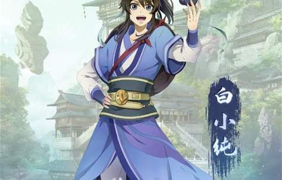

我最喜欢的动漫人物--白小纯
作者：甄智宇 引用百度/b站人物介绍

人物经历
白小纯，别名九胖、夜葬、通天皇等，男，是耳根所著仙侠小说《一念永恒》及其衍生作品中的主角。在同名改编动画中由苏尚卿配音。 [25]在小说中初次登场于第1章， [26]动画中初次登场于第一集。 [25] 。
- 白小纯原为帽儿山村落孤儿，因燃烧先祖遗留的灵香被灵溪宗李青候接引踏上修仙之路，自此开启长生求道之旅
- 白小纯初入灵溪宗时在火灶房任杂役，借万药阁十碑第一的成就获得关注。后完成天道筑基，获封灵溪宗荣耀弟子
- 为获得永恒之物化身夜葬潜入血溪宗，通过血魔试炼成为第二血祖并取得血主身份
- 促成灵溪、血溪等四宗合并为逆河宗，获得少祖称号
- 该角色在《一念永恒》第三季质子篇与第四季一念永恒大陆篇中，持续面对新旧世界的挑战
- 了解更多百度一下你就知道
人物战绩
- 经典一战 :名震两宗哔哩哔哩b站
人物能力
| 姓名 | 性别 | 宝物 | 法术 | 身份 |
|---|---|---|---|---|
| 白小纯 | 男 | 永夜伞 | 通天法眼、寒门养念决 | 血溪宗血子、灵溪宗荣耀大弟子 |